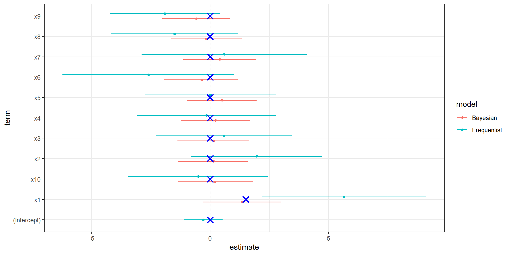

Why We Need Bayesian Linear Regression
Mechanism, Interpretation, and Failure Modes of Frequentist OLS
Daniel Skak Mazhari-Jensen
2026-06-08
What is this Bayesian thing anyway?
Chat with your neighbor for 3 minutes - where/what have you heard about Bayesian inference?
:raising_hand_woman: How many have heard about Bayesian inference?
:raising_hand_woman: How many already use a Bayesian workflow?
:walking::walking_woman: Do you ?????
Never <——-> I took a course in computer science
The Core Question
Why do we need a Bayesian approach to regression - we can just use ordinary least squares?
The answer is not (only):
- philosophy
- elegance
- a matter of preference
Real regression problems are often weakly identified, noisy, unstable, and geometrically pathological.
Bayesian regression stabilizes inference.
The Frequentist Ideal
Ordinary Least Squares (OLS):
- minimizes squared residuals
- produces unbiased estimators
- provides confidence intervals and p-values
- works beautifully asymptotically
The classical linear model:
\[
y = X\beta + \epsilon
\]
with
\[
\epsilon \sim \mathcal{N}(0, \sigma^2)
\]
OLS estimator:
\[
\hat{\beta}_{OLS} = (X^TX)^{-1}X^Ty
\]
The Hidden Assumption
OLS works well when:
- predictors are not highly collinear
- sample size is large
- signal-to-noise ratio is reasonable
- parameters are strongly identified
But real data often violate all of these simultaneously.
A More Realistic Situation
Suppose we have:
- 30 observations
- 10 predictors
- strong predictor correlation
- weak signal
- uncertain mechanisms
This is extremely common in:
- social science
- biology
- psychology
- economics
- policy research
The Data Generating Process
The truth is simple.
Only one predictor matters.
\[
y = 1.5x_1 + \epsilon
\]
All other predictors have zero effect.
Yet predictors are highly correlated.
The Mechanism of Failure
With correlated predictors:
- many coefficient combinations fit equally well
- the likelihood becomes nearly flat
- tiny noise changes estimates dramatically
OLS asks:
Which coefficients minimize prediction error?
But it never asks:
Are these coefficient magnitudes plausible?
The Geometry Problem
Collinearity creates unstable directions in parameter space.
The matrix:
\[
(X^TX)^{-1}
\]
becomes nearly singular.
As a result:
- coefficients explode
- signs flip
- uncertainty becomes enormous
- interpretation collapses
The Bayesian Solution
Bayesian regression adds prior information:
\[
\beta_j \sim \mathcal{N}(0,1)
\]
Posterior:
\[
p(\beta \mid y)
\propto
p(y \mid \beta)p(\beta)
\]
The prior regularizes weakly identified directions.
This changes the geometry of inference.
Important Clarification
Bayesian priors are not magic.
They encode structural skepticism.
The prior says:
Large coefficients should require strong evidence.
This is often scientifically reasonable.
Simulation Setup
We now simulate the failure directly.
- small sample
- many predictors
- high collinearity
- weak signal
The true model:
\[
y = 1.5x_1 + \epsilon
\]
Only x1 matters.
Why This Happens
Predictors are interchangeable.
The model can fit equally well using:
- huge positive x1
- huge negative x2
OLS has no mechanism preventing absurd parameter values.
It only optimizes fit.
The Frequentist Interpretation Problem
Researchers now face impossible interpretation.
Questions become unstable:
- Which variables matter?
- Which signs are trustworthy?
- Which effects are real?
p-values fluctuate wildly across samples.
Bayesian Regression
stan_glm
family: gaussian [identity]
formula: y ~ .
observations: 30
predictors: 11
------
Median MAD_SD
(Intercept) -0.06 0.36
x1 0.47 0.83
x2 0.66 0.76
x3 0.19 0.72
x4 -0.41 0.80
x5 0.10 0.78
x6 0.04 0.71
x7 -0.10 0.72
x8 0.71 0.69
x9 -0.50 0.77
x10 0.93 0.78
Auxiliary parameter(s):
Median MAD_SD
sigma 1.97 0.28
------
* For help interpreting the printed output see ?print.stanreg
* For info on the priors used see ?prior_summary.stanreg
Let’s have a look

model estimates and ground truth.
What the Prior Does
The prior shrinks implausible coefficients toward zero.
Not aggressively.
Just enough to stabilize weakly identified directions.
This is called:
- regularization
- shrinkage
- partial pooling of uncertainty
Bias-Variance Tradeoff
Frequentist OLS emphasizes unbiasedness.
But unbiased estimators can have enormous variance.
Bayesian regression accepts:
- tiny bias
- dramatically lower variance
This often improves:
- prediction
- calibration
- scientific interpretation
The Deep Point
OLS treats the model as fixed truth.
Bayesian workflow treats models as uncertain approximations.
This distinction is profound.
Posterior Interpretation
Frequentist confidence interval:
Does NOT mean: “There is a 95% probability the parameter lies here.”
Bayesian posterior interval:
Literally means: “Given model and data, there is 95% posterior probability the parameter lies here.”
Weak Identification
The Bayesian posterior honestly expresses:
- uncertainty
- partial identifiability
- lack of information
Sometimes the correct scientific answer is:
“We do not know very much.”
OLS often hides this instability behind noisy point estimates.
Posterior Predictive Thinking
Bayesian models naturally support:
- posterior predictive checks
- hierarchical models
- measurement error
- causal modeling
- uncertainty propagation
This enables model criticism rather than blind estimation.
A More Extreme Failure
Increase:
- predictors from 10 to 20
- correlation from 0.9 to 0.95
OLS becomes nearly meaningless.
Coefficients:
- explode
- reverse sign
- become sample-dependent noise
Bayesian regularization still produces stable inference.
The Core Mechanism
Frequentist OLS:
\(hat{β}\) =arg min RSS
Bayesian regression:
\[
p(\beta \mid y)
\propto
p(y \mid \beta)p(\beta)
\]
The prior changes the geometry of inference.
This is the key idea.
Final Takeaway
Bayesian regression matters because:
- real models are weakly identified
- finite samples are noisy
- predictors are correlated
- unconstrained likelihoods become pathological
Priors repair inferential geometry.
Final Thought
The Bayesian question is not:
“What coefficient minimizes error?”
The Bayesian question is:
“What parameter values remain plausible after combining data with scientific structure?”
That is usually the more meaningful scientific question.
References
Gelman, A., et al. Bayesian Data Analysis McElreath, R. Statistical Rethinking Vehtari, A., Gelman, A., Gabry, J. (2017) “Practical Bayesian model evaluation using leave-one-out cross-validation” Hastie, Tibshirani, Friedman. Elements of Statistical Learning